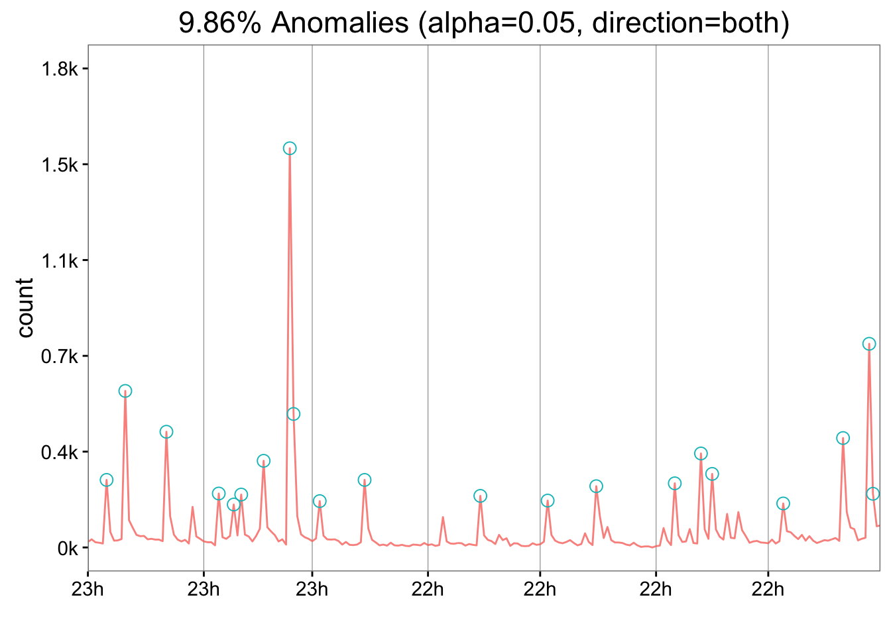

This exercise is dependent on the successful completion of Exercise 2.
For this exercise, use the AnomalyDetection package to identify anomalies in the web_data set – looking for anomalies in each combination of deviceCategory-channelGrouping:
sessions data.bounceRate.Sound intimidating? It’s actually fairly simple!
First, we need to install and load the AnomalyDetection package, so type install.packages("AnomalyDetection") and, once it’s installed, add this line to your script:
The easiest way to do this is to simply build a nested loop to run through each combination of deviceCategory and channelGrouping. Now, generally, it’s better to take advantage of vectorization in R and not use loops at all…but that’s just a hint as to which of your instructors wrote this exercise.
We can do this by getting the unique values of each using the unique() function. For now, let’s write that code and then just demonstrate that these loops can crank through all the possibilities.
# Get vectors with the unique values for each variable
device_cats <- unique(web_data$deviceCategory)
channel_grps <- unique(web_data$channelGrouping)
# Start with a loop for each unique value of deviceCategory
for (d in 1:length(device_cats)){
# Then, add a loop within it for each unique channelGrouping
for (c in 1:length(channel_grps)){
# For now, let's just print all the values this loop creates.
# the \n is just a new line indicator
cat("deviceCategory =",
device_cats[d],
"and channelGrouping =",
channel_grps[c],
"\n",sep=" ")
}
}If you run that, you should see a list of all combinations of deviceCategory and channelGrouping
Now, let’s right a separate bit of code just to prove to ourself that we can pull a subset of data that is just the sessions for a given pair of values for these two variables. You can put this in place of the cat() function and just Run these new lines to try it out. Ultimately, we’ll swap these rows out for the dynamic loop values:
# We'll need dplyr
library(dplyr)
# Filter the data to only include a specified deviceCategory and
# channelGrouping (we'll make these dynamic in a bit) and pull just
# the date, deviceCategory, channelGrouping, and sessions
current_data <- filter(web_data,
deviceCategory=="mobile",
channelGrouping=="Email") %>%
select(date, deviceCategory, channelGrouping, sessions)
head(current_data)## date deviceCategory channelGrouping sessions
## 1 2016-01-01 mobile Email 27
## 2 2016-01-02 mobile Email 37
## 3 2016-01-03 mobile Email 26
## 4 2016-01-04 mobile Email 24
## 5 2016-01-05 mobile Email 21
## 6 2016-01-06 mobile Email 264So, good. That works! So, now, let’s do three things:
AnomalyDetection package$sessions data through the AnomalyDetectionTs() (time-series) function.We just need to make a couple of updates to the code:
# We'll need dplyr and AnomalyDetection
library(dplyr)
library(AnomalyDetection)
# Filter the data to only include a specified deviceCategory and
# channelGrouping, and convert the date to POSIXct
current_data <- filter(web_data,
deviceCategory=="mobile",
channelGrouping=="Email") %>%
select(date, sessions) %>%
mutate(date2 = as.POSIXct(date)) %>%
select(date2, sessions)
# Run anomaly detection on the data
AnomalyDetectionTs(current_data, direction = "both", plot=TRUE)## $anoms
## timestamp anoms
## 1 2016-01-06 264
## 2 2016-01-11 604
## 3 2016-01-22 448
## 4 2016-02-05 212
## 5 2016-02-09 170
## 6 2016-02-11 208
## 7 2016-02-17 337
## 8 2016-02-24 1531
## 9 2016-02-25 516
## 10 2016-03-03 183
## 11 2016-03-15 264
## 12 2016-04-15 203
## 13 2016-05-03 185
## 14 2016-05-16 240
## 15 2016-06-06 251
## 16 2016-06-13 365
## 17 2016-06-16 287
## 18 2016-07-05 174
## 19 2016-07-21 424
## 20 2016-07-28 784
## 21 2016-07-29 211
##
## $plot